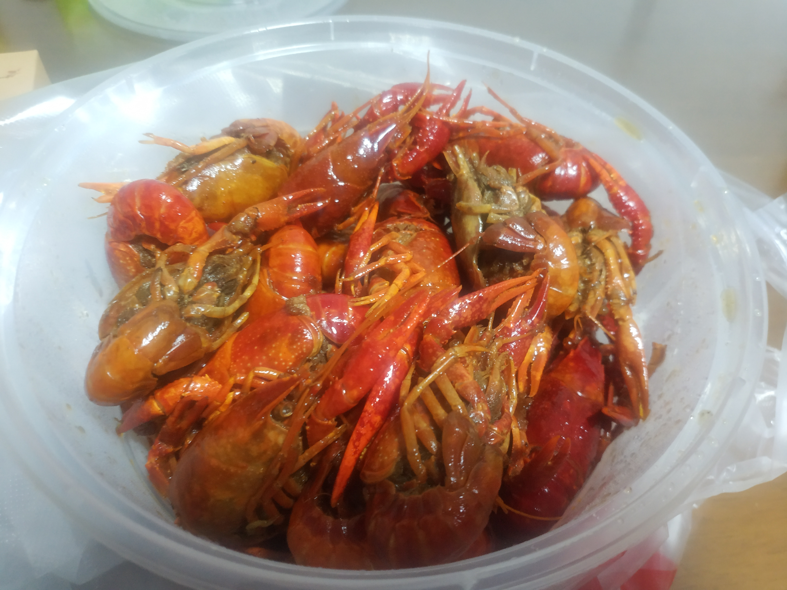

Happy chinese new year~
To be honest, it is not a big moment for me……cause I dont feel famerly-warmth. It is really hard for me to stay with both my dad and my mom……I mean dad or mom is ok for my but I just cannot deal with two of them……
I also donnt feel frendly-warmth…… I should commit it is mainly my fault……
I am sleepy…… I will continue to finish this after I get up.Hope I can get up early in the first day in a new year.
I have not continued……
I just realize I must improve my capbility of english writing. So I decide to wirite my darily life by english since the day. Of course, grammar and vocabulary correct work should depends on google Translation.
Now, it is 4:51 a.m. I am writing my first english daniary, since I have a dramly sleep problem .
There is a group party in Jan.16th which I realy look forward to. However, I should go shopping with my Prof. and senior group sister in Jan.15th. To be honest, I am a little bit fear of it —— I am a social fear people.
I read too much romantic stories these days, I almost forget I am in school term. It just like still in vacation —— do whatever I want to do, sleep at morning and get up at evenning. My Prof. is very kind and never push —— I really don't deserve him.
Come on, I don't want to be a loster. I dreams that get PHD. aboard and learn more about the wanderful world. I really should chrish my time and spend it in meanningful stuff. I need to make up for my bad math and english fundamators. Please dno't spoil yourself. In the idea situation, I should get up at 7:00 am every morning and go to bed 11 pm every evening. I should never waist my time in useless romatic stories. Please, be a better guy.
———-33 mistakes ——–
I just realize I must improve my capability of English writing. So I decide to write my daily life in English since the day. Of course, grammar and vocabulary correct work should depend on google Translation.
Now, it is 4:51 a.m. I am writing my first English diary, since I have a serious sleep problem .
There is a group party on Jan.16th which I really look forward to. However, I should go shopping with my Prof. and senior group sister on Jan.15th. To be honest, I am a little fear of it —— I may have social phobia.
I read too much romantic stories these days, I almost forget I am in school term. It just like still on vacation —— do whatever I want to do, sleep at morning and get up at evening. My Prof. is very kind and never pushes —— I really don’t deserve him.
Come on, I don’t want to be a loser. I dream go abroad for a Ph.D. and learn more about the wonderful world. So I really should cherish my time and spend it in meaningful stuff. I need to make up for my bad math and English fundament. Please don’t spoil yourself. In the ideal situation, I should get up at 7:00 am every morning and go to bed at 11 pm every evening. I should never waste my time in useless romantic stories. Please, be a better guy.
照理来说，作为一个流水账系列，我是应该每天写点啥的，如果缺了哪些天，似乎也最好要有一个合理的解释，however，这个“每天写点啥”的性质显然是一个消耗我为数不多的自制力的没啥必要的限制，那么就这样吧，爱写不写，想逼逼啥就逼逼。
我想记录日常还有一个显为易见的好处——减少因为人类糟糕的记性而被落下的好想法，至少是自以为是好的想法。
今天发现一个似乎很容易为我带来动力的观点（实际上这个观点已经在我的脑海里徘徊很久了，只是第一次尝试用语言方式总结出来）——世人对学者的要求其实很低，只不过是要去尽力掌握一些知识罢了，而积累的越多他们也就会认为你越优秀，实际上却不过是一些简单的知识积累罢了，积累的足够了也就自然会有产出会能灵活应用，也就成了所谓的“创新”。这么想会让我觉得学习实在是个简单的工作，并且完成这一项工作的时间越早，所谓的“世俗评价‘里，对你的评价也就会越高，你也就越容易得到想得到的东西。这么一想我觉得学习的动力多了不少，我希望能经常找到这一种感觉。
今天在怀着一种不耐放的态度的时候去看电影，看完了《公民凯恩》， 我得承认对于我看这部电影时候的心境来说，看这部封神的佳作实在是有些暴殄珍物。这是一部很棒的电影，多个不可靠叙述人对同一个形象的逐渐挖掘，我想我很早之前（指《黄雀纪事》）就很喜欢这种形式了，拍摄手法使人的情绪易于代入，人物性格典型而又特别。咦，我讨厌自己这种假装专业的点评方法，我更想从一个非专业的欣赏角度来说他。唔，那么我想他是一部”我从剧情中已经看出来很多了，但我觉得一定还有很多我没看出来的东西，然后一查，啊，果然还有很多我没看出来的，并且所有的东西都是合乎情理甚至叫人拍案叫绝的“， 我想这就是我对一部好电影的肤浅定义了。
这两天的生活实在算不上令我满意，我确信了，我现在的目标就是治一治自己的”任性妄为“，非得把自己扭转到那种绝对自律上去，否则我会一直很难受。最近添了失眠的毛病，索性褪黑素对我还是很有用的，打算吃上21天褪黑素，把习惯养成了再戒掉。
关于健康饮食这件事，我实在舍不得我妈妈做的好吃的饭菜，毕竟根据我对自己人生的规划，以后聚少离多真的吃不上多少了，珍惜吧，晚点执行健康饮食计划晚点拥有想要的体态反而成为了没那么重要的事情。
zy老师给我灌输了一个新的观点”如果我不出国读博士，或者不去一个更好的学校读博士，那么我现在选择去的研究生学校会很亏“， 唔，我得承认有道理，但内心当中其实实在不太喜欢这个观点，毕竟比起计较一分一毫的得失，拥有新的体验、尝试投资风险似乎是我更喜欢的。然而，我的潜意识里大概还是个小家子气的家伙吧，叫我忍不住一遍一遍的问自己”你真的确定嘛？“又也许是潜意识里在进行自我保护，叫我规避风险？我不知道，我可能还需要纠结一段时间，直到无可避免的命运将我送到我该去的地方。
《忒修斯之船》原故事看完了，我上一篇是不是也提到了这个？我不记得了，也懒得回去翻看，那再说一遍好啦，总之是一个”自以为在借哲学隐喻政治“的故事。然后我看起来那些五颜六色的批注，感觉批注可比原文有意思多了，真不知道我当时为什么要紧受所谓的五遍阅读法，折磨自己，这件事告诉我们及时止损真的是一种不是谁都能有的智慧。
今天的褪黑素似乎没那么有用？为什么我还不困，我该不会就有抗药性了吧，希望不是，嘤。决定去看Gilbert Strang教授的linear Algebra.(说起来看了两年这个系列的视频我还没看完，真丢人)
时隔nnnnnnnnnnn久之后，这个名为“阳某每天都在干些啥”的blog终于文如其题开始记起来流水账啦，既然是第一篇流水账又写在一个难以入眠的漫漫长夜，不如多叭叭一些好啦。
记录生活一直以来其实对我而言是一件颇为麻烦的事情，本来想做的事情就那么多都没做，本来人生就没啥意思，本来就没有啥写东西的动力，为啥还要为难自己去记流水帐嘛。but，故事总是要有这么一个but才会开始嘛。我的but发生在今天晚上日常无脑刷bilibili，今天突然体会到了老番茄的魅力，今天突然了解到了何同学的初心，似乎一下子就明白了分享、创作是一件多么有意义的事情。之所以那么多没有做的想做的事情，是因为从来没有动力开始，之所以觉得自己的人生乏味无趣，是因为从不从中挖掘乐趣。我没有胆量在熟悉的同学朋友们中公开自己的愚蠢无趣（好嘛终于承认这是一种懦弱了），害怕被打破人设也害怕建立起什么奇怪的人设。那么就从这个小小的角落开始吧，看看在这里能孵化出些什么。
今天难得是有上午的一天（对，我是一个有着极为糟糕的作息的家伙）9点起床给自己泡麦片，吃一个火龙果，因为难得上午起床被爸妈组团围观emmmm
上午背英语单词（这里强调一下英语，是因为我总会有一天要开始背德语单词的！哼！），开始意识到单纯靠着app背单词效率实在不高啦，开始用app的同时在白纸上写上不会的单词，然后就攒了辣么多QAQ

背单词之后下载了“羊驼雅思”，是之前看b站视频一个学习区up推荐的，照常做一做测试，发现自己大概就是4.5-5分的水平QAQ我果然之前被soren夸英语好之后膨胀了，这才是真实的我QAQ
中午妈妈给我做了猪舌（超好吃！是有妈妈味道的好吃！！！）吃饭完，看完了《忒修斯之船》的原故事，讲道理这故事不是我的style，昏昏欲睡之间勉强看完大概明白了是在借着“忒修斯之船”的隐喻说阶层之间的斗争永远不会停止，一艘船被换了所有的部件其实还是那艘船，阶级斗争的故事换了主角也还是那个故事。
下午睡觉，外面打雷超大声，伴随着雷声睡觉我做了一个奇奇怪怪的梦，大概就是某朋友带我参观医院的博物馆，都是一些非自然死亡的尸体模型，家暴死亡的，坠楼死亡的，被截肢死亡的……总之一片血腥，梦里我还挺害怕的（当然那怕是在梦里也要面上硬撑着），醒来之后就画面就模糊的不行然后就啥都不记得了。能睡一下午是因为隔壁小妹妹和我请假说下午不用给她补课了，唔，谁喜欢给小学生补课呢，睡觉不香嘛，哼。
醒来就到午饭点了，老爹买了小龙虾，yeah！为了给wx炫耀，当场有拍照。

小龙虾是我前两天提出来想吃的，原因是之前有个晚上凌晨两点点了夜宵小龙虾，结果送来的小龙虾贼小只，完全不够吃嘛哼哼。于是和老爹说想吃，我亲爱的老爹果然买给我啦嘻嘻嘻嘻。不过疫情期间，价格贵也没有想象中好吃啦。
吃完小龙虾，没什么吃晚饭的心思，开始刷b站，看木鱼水心讲《红楼梦》，红楼一直是我看不懂但觉得牛逼的东西，我可喜欢这种讲红楼的系列了，好嘛，之后的下饭视频都有了。看了一会，之后去给自己做土豆沙拉——实际上是一堆乱七八糟的东西和土豆混在一起emmm我家饮食一直重盐重油，这玩意总是健康一些的。
吃完沙拉继续看视频，开始刷老番茄，终于明白了老番茄的视频有多搞笑，然后知道了他人生赢家的背景1551酸一酸，总之一整个晚上就这么过去了。讲道理我今天本来应该健身、看线性代数网课视频、洗澡、背单词结果都没干，是废物本废没错了嘤。
不过好歹是开始写流水帐了，waw这写起来可真是文思泉涌，舒服！总之，这是今天发生的最有意义的事情啦。
唔，规划明天这事我爱干。虽然不见得有p用，总之先规划着。希望明天的yyxunn也能见到9点的太阳，然后吃早饭背单词，消化消化就去运动然后洗澡，我总觉得早上运动会比晚上运动健康，不过今天做雅思阅读刷到一道题说晚上运动会更好？唔，等会睡前去查一查。不管怎么样明天早上要运动，因为给邻居小姑娘上课之前一定要洗澡，洗澡之前一定要运动啦。洗澡折腾完之后，没背完单词就继续背单词，背完了就看b站听力口语挑战英语视频，搞完就看mit18.06。明天要把今天没看的补上哦。中午睡个觉，这次被睡太久了，午睡真的0.5小时就够了，起来之后看网课。要是网课看完了就看自控力和整理笔记。老子一定要过上规律的学习生活！（认真脸）
我一直是一个超级自我超级自由的家伙，从小爸妈就给我了我足够的自我决定空间，好处是我有一定的决策能力和独立生活能力，坏处是我真的毫无自制力，环境和基因让我成为不至于太堕落的人，但是我知道自己是个不够努力过于懒散的家伙，这样的生活我已经过够了，我希望能做出一些改变。我希望在体验过自由懒散之后，我也能去体验自律的自由。总之，我在行动了，有时候事情似乎还是原来那么糟糕，但是我自己知道，我在做些什么，我在渴望什么。
最近还有一个很棒的心态上的进步，我开始体会那种知识无底洞了，我渴望用各种知识来填补自己，我渴望进行基础知识的积累，我对虚幻的言情小说丧失了兴趣，我开始希望不要把一分一毫的时间浪费在不能使我进步的事情上，也许这是一种退化也许是一种成长？我不知道，但是我确信，现在的我需要这样的心态。
一天差不多花一个小时写流水账，我希望你喜欢上这一种感觉。今天我在0：30左右感受到了困意，这对于昨天吃完了最后一颗褪黑素今天新买的褪黑素还没到的我来说绝对是一件好事，我打算去睡了，希望明天能早起，晚安~